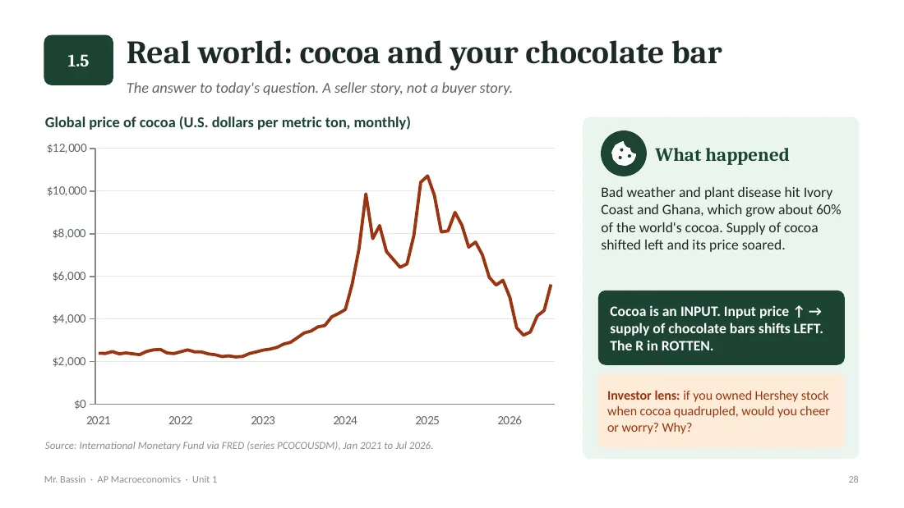
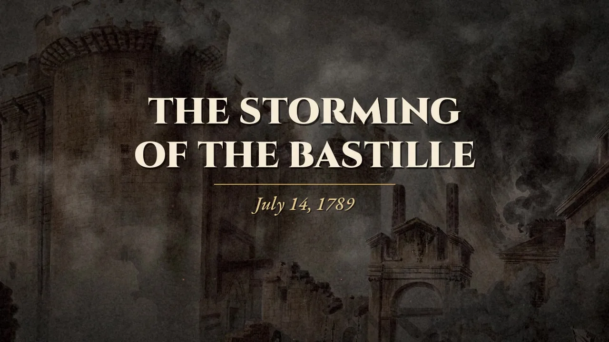
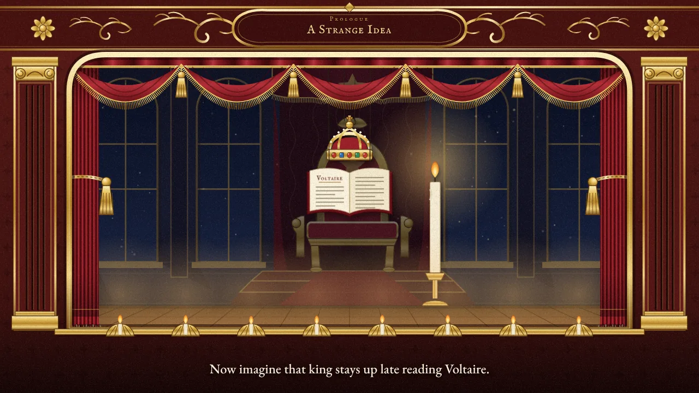
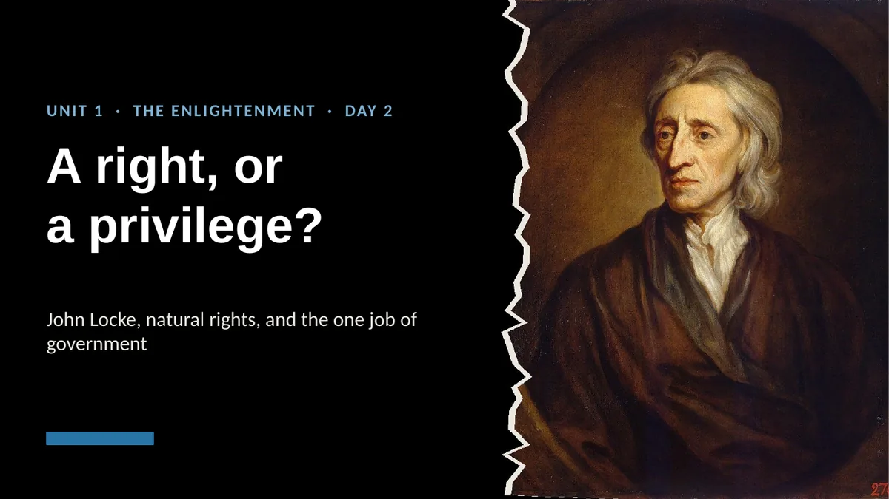
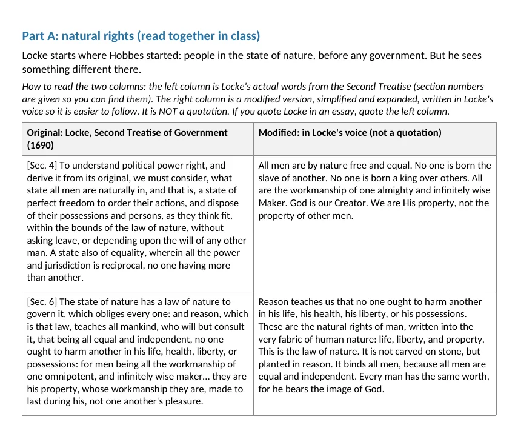
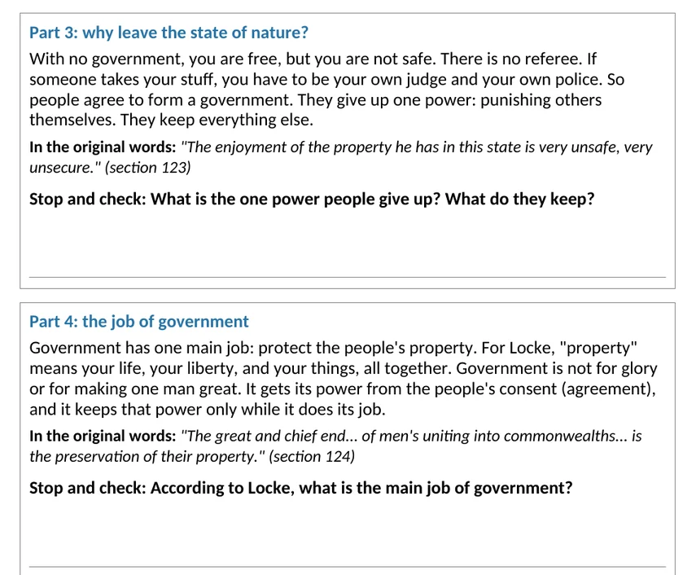
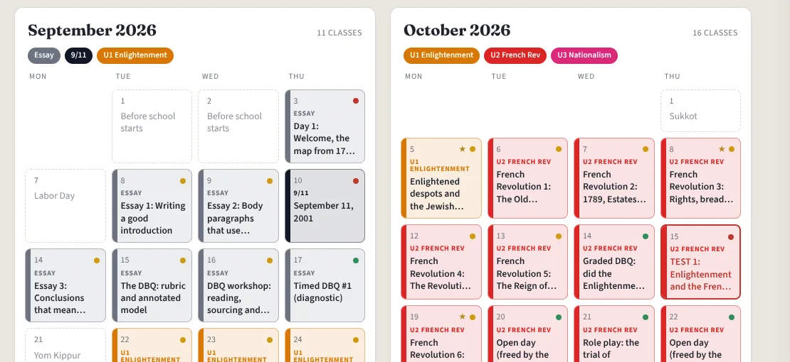
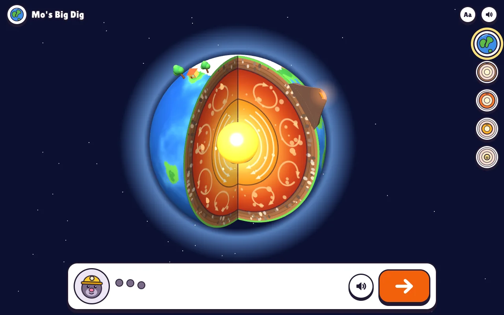
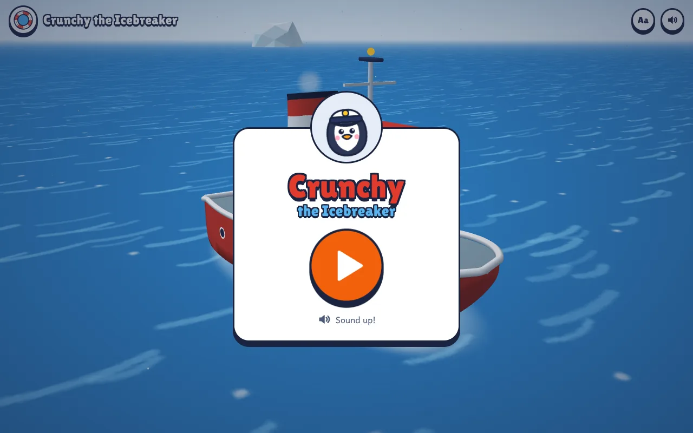

Teacher who builds
I teach AP Macro and history, and I build the learning tools my students use.
Games, videos, and IEP worksheets, made with AI and checked by me. On my school's AI Task Force, I coach other teachers. Outside school, I've built a call system for a plumbing company and a financial aid dashboard.
AP Macroeconomics
Built backward from the AP exam
I planned the year backward from the May 7 exam, with all 42 College Board topics on a named day. Then I built games for the skills the exam grades.

The DRS Econ Arcade
Seven games for the skills the AP Macro exam grades. Read a headline and drag the curve it moves. Run the Fed through 1975, 1980, 2008, or 2021 and live with the lag. Find the mistakes on a badly drawn graph. After every answer, a one-line why gives the sentence that earns the point on the exam.
A readiness panel shows each student a heat map of the six units, their weakest topic, and what to play next, plus a readiness code they paste into Schoology.
No accounts, and scores stay on the student's device. If a teacher turns on the class leaderboard, it sends three initials and the game results to a Google Sheet the teacher owns. No names, no emails.
16 new lesson decks on real data
This fall I used AI tools to make 16 new lesson decks tied to real events and real data, like FRED charts of cocoa prices and car sales, plus AP-style quizzes with answer keys. Unit tests and mock exams are on the calendar from day one.

Global History 10
Short videos for the French Revolution unit
I use AI to turn a topic into a short narrated video for class. Each one runs a few minutes and has captions on screen. The three documentaries end on a question we discuss in class.

The Road to 1789
6 minutes
How France went broke, cold, and hungry. Six causes, told with 47 paintings, prints, and maps. It ends on a question: who is really to blame?
Watch The Road to 1789
The Storming of the Bastille
3 minutes
July 14, 1789, hour by hour. It ends on a question: a win for freedom, or the day the Revolution learned that violence works?
Watch The Storming of the Bastille
The Reign of Terror
5 minutes · has hard images
Robespierre, Rousseau's idea of being "forced to be free," and the list of the condemned, told in black and white with only the red kept. It ends on a question: do the ends justify the means?
Watch The Reign of Terror
The Enlightened Despots
Animated short
An animated short set on a royal stage, about Frederick the Great, Catherine the Great, and Joseph II: reform from the top down, but no vote for the people.
- Real picturesThe documentaries use historical paintings, prints, and maps, each one credited.
- Real musicPublic domain recordings of classical music, like Beethoven.
- Captions on screenStudents can read along, and it works with the sound off.
- Graphic moments flaggedWhen a video has hard images, I note them ahead of time and decide what to show.
Global History 10
A review game you walk through
Live and free. Open it on a phone or a Chromebook, the same way my students do.

Road to Revolution
A 3D walk from 1649 to 1789. Hobbes, Locke, Montesquieu, and Rousseau teach right inside the world, every line is spoken out loud, and it saves your progress on the device, with no account. I made it as review for our October test on the Enlightenment and the French Revolution.
Global History 10
Lessons that work for every student
I use AI tools to make my lessons and worksheets work for the students actually in the room.
- The original source next to a version students can actually read.
- An IEP version of every worksheet: bigger type, more space, shorter chunks, and sentence starters.
- Each lesson fits our 38-minute period.
- Everything prints well in black and white, because that is our printer.



How I work
AI drafts. I decide.
Example
AI draft
A price ceiling set crossed out: above, corrected to: below the equilibrium price causes a shortage.
On my school's AI Task Force, I coach teachers in group demos and one‑on‑one, and I helped write our AI guidelines.
Start with the job
What does the person need at the end? A student needs to explain a graph on the test. A plumber needs the job in his CRM. That comes first, not the tool.
Let AI draft
AI makes the first version of the tool, the video, the game, or the worksheet. It is fast, and it is a starting point.
Check it like a grader
I check facts against real sources, and I check every number and every picture. Nothing goes out before that.
Build for the people using it
IEP versions and spoken narration for students. For everyone: it works on a phone, prints in black and white, and fits the systems people already use.
Leave the thinking to people
The tool does the busywork. Students still draw the graph and write the why. People still make the call.
Paperwork
Less paperwork, more teaching
I also build tools for the paperwork around teaching.

A pacing calendar for the whole year
All 127 Global History classes on one calendar, with tests on the school's exam days. When I am out sick, flexible days absorb it and the tests do not move.
The AP year on one page
Unit blocks sized by real class meetings, every test and mock exam, and a plan for sick days.
Grade transfer without retyping
Grades go from Schoology to Veracross by browser automation, not by hand.
A first draft of my weekly update
Every Thursday a draft of my update email is ready from the calendar. I read it, fix it, and send it.
Outside the classroom
Tools that do the typing for people
Outside school, I build tools for the busywork that eats people's time, like typing the same details from one place into another.
A customer calls
Caller: "Hi, I have a big leak in my bathroom. I'm at 12 Oak Lane. Can someone come today?"Office: "Yes. A tech can be there in about an hour. The visit is $150."
AI writes it down and pulls out the job
- Job
- Leak repair
- Urgency
- Emergency
- Address
- 12 Oak Lane
- Price quoted
- $150
- Next step
- Tech on site in about an hour
A new deal is waiting in the CRM
Leak repair, 12 Oak Lane · $150 · Emergency
A call system for a plumbing company
When a call ends, AI writes down what was said and pulls out what matters: the address, the job, how urgent it is, the price quoted, and the next step. A new deal shows up in the CRM in under a minute, so no job gets lost on a sticky note. It is designed to work with the phone number and CRM a business already has.
- Twilio
- Whisper
- LLM extraction
- Pipedrive

FinAid Dashboard
Built with a university financial aid counselor. The federal aid formula has two blind spots for many families: regional cost of living and K-12 tuition. This dashboard adjusts for both with real economic data and shows each step of the math, so the counselor can explain every number.
- Next.js
- TypeScript
- Real economic data
For little kids
For kids who can't read yet
I also make talking 3D explainers for ages 3 to 5. Every line is spoken and every button is a picture, so a child never has to read. Each voice line is checked with speech recognition so it comes out clear.


At home
The lab on my desk
A Mac mini at home runs my own AI setup around the clock. It is where I try new tools before I use them for real.
An agent on call
A personal AI agent I talk to on Discord, with skills it improves over time.
Local models
Open models that run on the Mac itself with Ollama.
20+ scheduled jobs
News briefings read aloud each morning, nightly health checks, and more.
A dashboard
One home screen that tracks cost, usage, and whether every job ran.
About me
I teach AP Macroeconomics and Global History 10 at DRS Yeshiva High School for Boys in Woodmere, NY, where I'm on the AI Task Force and coach other teachers. I have worked in schools since 2016: first as a special education teaching assistant, then teaching Regents Global History and a personal finance course I designed.
Before teaching, I worked in IT support at M. Shanken Communications. I also run Bassin Consulting, where I offer AI training and tools to schools and ed-tech teams. My favorite part of the job is still the moment a class gets it, whether it is supply and demand or why a crowd stormed a prison.
- I teach
- AP Macroeconomics, Global History 10
- I build
- Review games, history videos, worksheets, dashboards
- Education
- M.S. in Education, Pace University. B.A. in History, Baruch College.
- Based in
- Long Island, NY